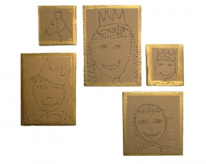
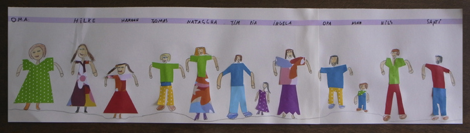

Basilikum Diese kleinen Planzen haben wir in (zwei Teile geteilte) Pet Flaschen geplanzt. Der Deckel hat ein kleines Loch.

Basilikum Diese kleinen Planzen haben wir in (zwei Teile geteilte) Pet Flaschen geplanzt. Der Deckel hat ein kleines Loch.

Wege Wirrwarr im Wohnzimmer Wie Du auf dem rechten Bild sehen kannst, haben wir Strassen aus schwarzer Pappe ausgeschnitten . Die weißen Streifen sind aus Klebefolie.…
Weiterlesen →
Portraits einer Familie Mit einem Bleistift werden die Köpfe auf Karton vorgezeichnet. Dann werden mit dem Bleistift Löcher gemacht, die der Linien folgen.
Weiterlesen →
Familie. Die Kleidung ist aus buntem Papier ausgeschnitten und der Rest ist von Hannah gemalt.
Weiterlesen →
Windlichter 02 Wenn man Löcher in Dosen macht, bekommt man ein kleines Licht, welches windgeschützt ist. Erst haben wir einfache Zeichnungen auf die Dose gemalt und…
Weiterlesen →
Spardosen Diese Spardosen haben wir aus leeren Duschgelflaschen gebastelt.
Weiterlesen →
Schloss 03 Wir haben ein Kühlschrank Karton zu einem Hochbett Schloss umgebaut.
Weiterlesen →